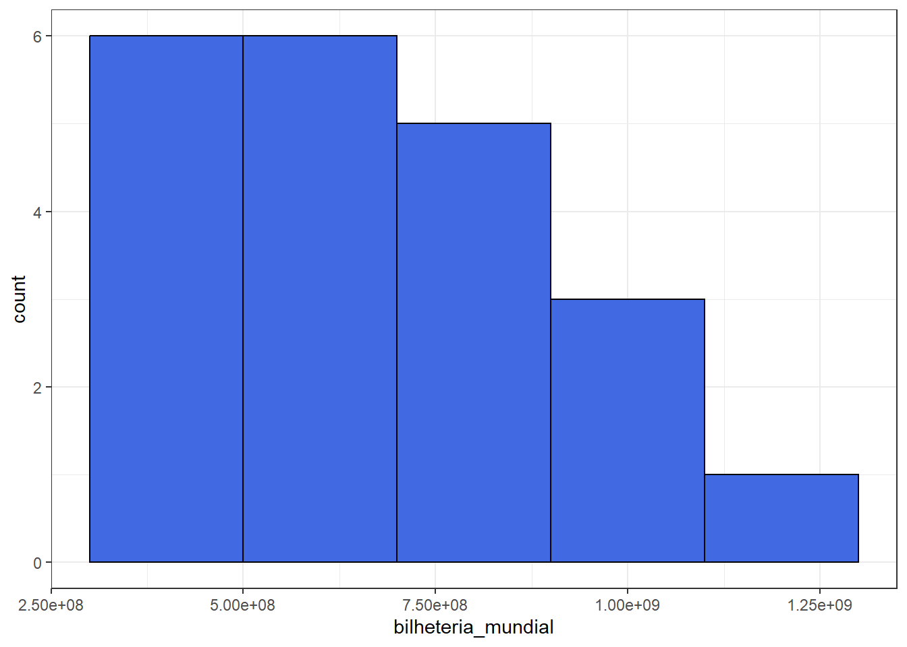
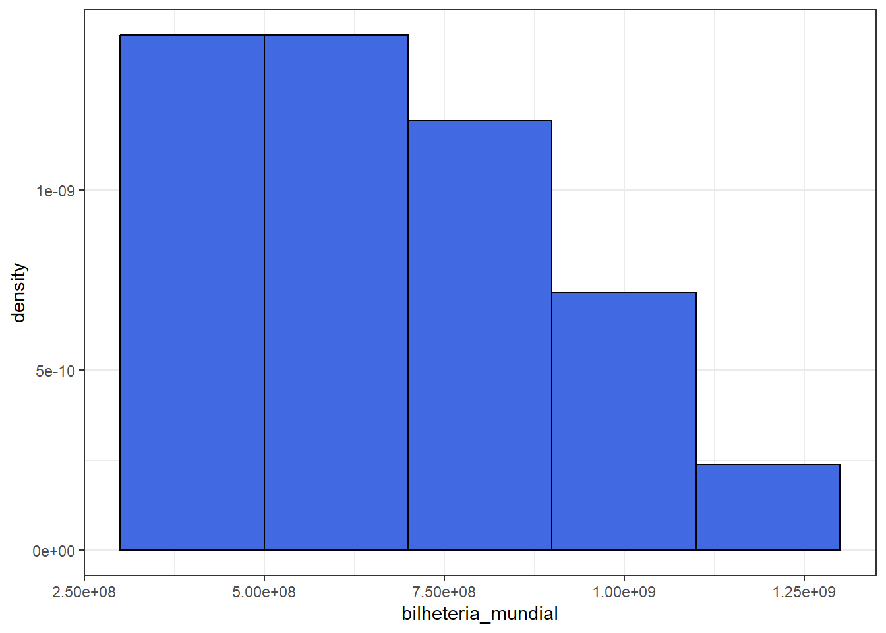
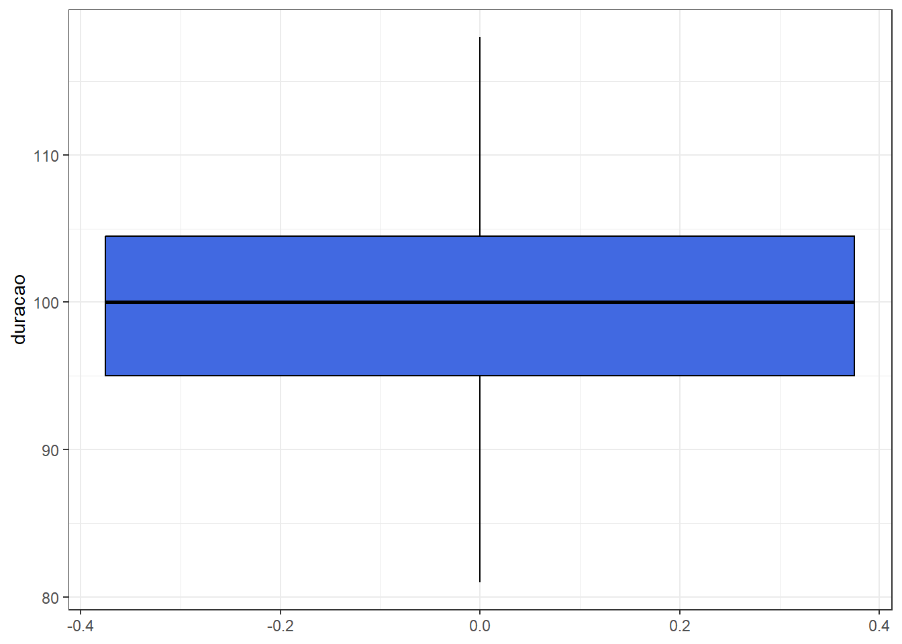
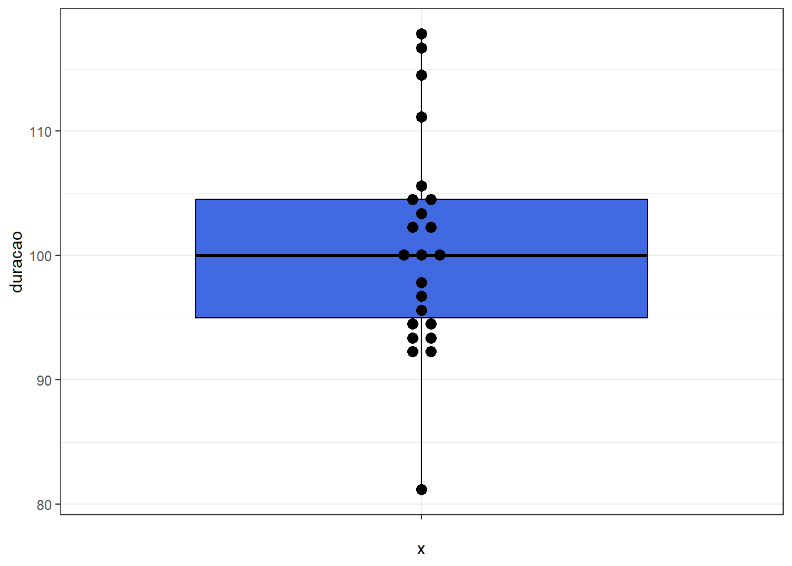
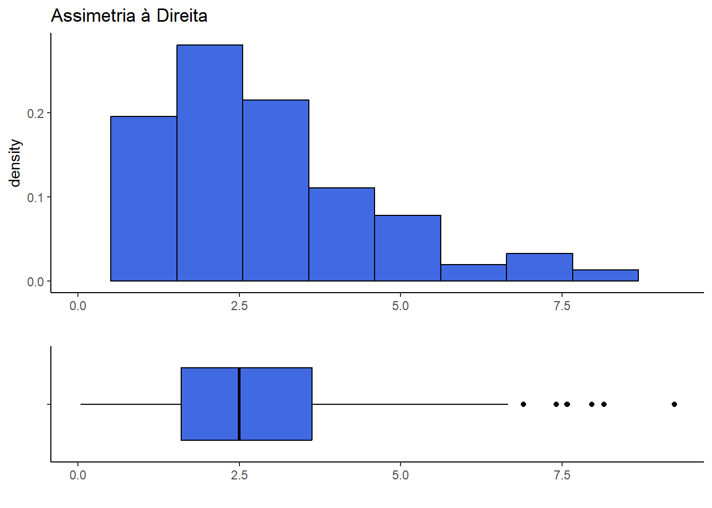
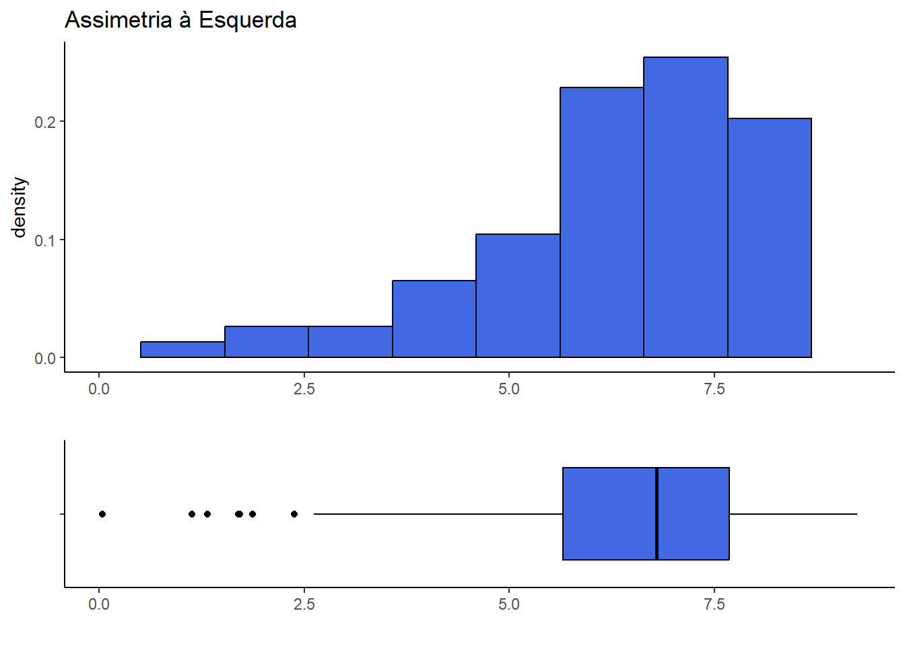
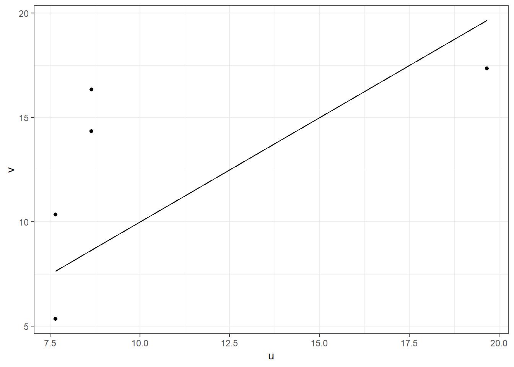
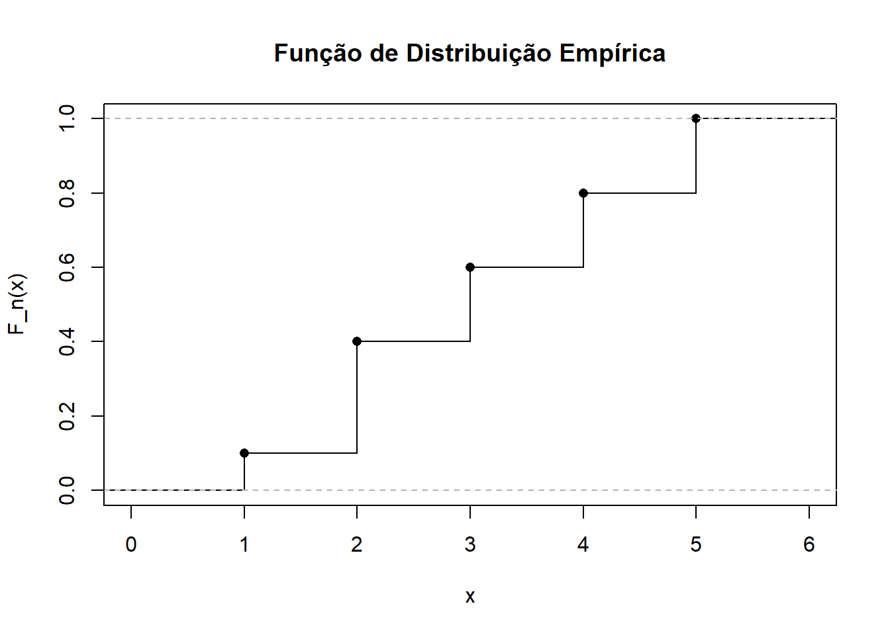

6 Modelos Gráficos
6.1 Gráfico de Barras
O gráfico de barras é adequado para variáveis qualitativas (nominais ou ordinais) e também para variáveis quantitativas discretas.
Exemplo 1: Variável Qualitativa Nominal (Gênero de filme)
| Gênero | Freq | FreqRel |
|---|---|---|
| Aventura | 8 | 0.3478261 |
| Ação | 2 | 0.0869565 |
| Comédia | 4 | 0.1739130 |
| Drama | 3 | 0.1304348 |
| Esporte | 3 | 0.1304348 |
| Ficção Científica | 1 | 0.0434783 |
| Musical | 2 | 0.0869565 |
graf_genero_f <- filmes_pixar %>%
ggplot() + theme_bw() + xlab("genero") + ylab("Freqûencia") +
geom_bar(aes(x = genero, fill= genero)) +
scale_fill_manual("genero", values = c("Aventura" = "deeppink",
"Comédia" = "magenta", "Ação" = "coral2",
"Esporte" = "seagreen1", "Drama" = "turquoise3",
"Musical" = "maroon3", "Ficção Científica" = "royalblue"))
graf_genero_p <- tab_genero %>%
ggplot() + theme_bw() + xlab("genero") + ylab("Proporção") +
geom_bar(aes(x= Gênero, fill= Gênero, y=FreqRel), stat="identity") +
scale_fill_manual("genero", values = c("Aventura" = "deeppink",
"Comédia" = "magenta", "Ação" = "coral2",
"Esporte" = "seagreen1", "Drama" = "turquoise3",
"Musical" = "maroon3", "Ficção Científica" = "royalblue"))
# ggpubr::ggarrange(graf_genero_f,graf_genero_p, legend="none")
ggpubr::ggarrange(graf_genero_f, graf_genero_p, legend = "none", ncol = 1)- Exemplo 2: Variável Quantitativa (duração do filme)
| Faixa_duracao | Freq | FreqRel |
|---|---|---|
| [81,86] | 1 | 0.0434783 |
| (91,96] | 7 | 0.3043478 |
| (96,101] | 5 | 0.2173913 |
| (101,106] | 6 | 0.2608696 |
| (106,111] | 1 | 0.0434783 |
| (111,116] | 1 | 0.0434783 |
| NA | 2 | 0.0869565 |
tab_duracao %>%
ggplot() + theme_bw() + xlab("Duração do filme") + ylab("Proporção") +
geom_bar(aes(x= Faixa_duracao, y= FreqRel), fill="royalblue", stat="identity")6.2 Gráfico de Setores (Pizza)
- Pode ser utilizado para variáveis qualitativas.
pizza_genero <- tab_genero %>%
mutate(Porc = scales::percent(FreqRel)) %>%
ggplot(aes(x = "", y = FreqRel, fill = Gênero)) +
geom_col(color = "white") +
geom_label(aes(label = Porc), #color = c(1, "white", "white"),
position = position_stack(vjust = 0.5),
show.legend = FALSE) + guides(fill = guide_legend(title = "")) +
scale_fill_manual("Gênero dos filmes", values =c("Aventura" = "deeppink",
"Comédia" = "magenta", "Ação" = "coral2",
"Esporte" = "seagreen1", "Drama" = "turquoise3",
"Musical" = "maroon3", "Ficção Científica" = "royalblue1")) +
coord_polar(theta = "y") + ggtitle("Gênero dos filmes") +
theme_void() + theme(legend.position="bottom",
plot.title = element_text(hjust = 0.5))
ggpubr::ggarrange(pizza_genero)- Por que deve ser evitado?
- Quando as frequências são muito pequenas (abaixo de 5%, por exemplo), as fatias se tornam de difícil visualização.
- Dependem do uso de cores. Isso pode dificultar a escolha de cores que sejam suficientemente contrastantes para uma melhor visualização. Isso pode ser ainda mais prejudicado dependendo do dispotitivo que for visualizar o gráfico (se a impressão ou o monitor for de baixa qualidade, por exemplo). Por fim, isso pode dificultar a visualização por pessoas que tem dificuldades em enxergar cores (cerca de 8% da população masculina é daltônica, por exemplo).
- A comparação direta entre dois gráficos de pizza é bem mais difícil que em gráficos de barras. No segundo é bem mais facil visualizar diferenças, se esse for seu objetivo.
- Ainda assim, podem ser utilizados em casos específicos onde os problemas anteriores não ocorrem (quando há poucas categorias, nenhuma delas com frequencias muito baixas e as diferenças são muito evidentes ou o objetivo não é fazer comparações).
- Quando as frequências são muito pequenas (abaixo de 5%, por exemplo), as fatias se tornam de difícil visualização.
6.3 Histograma
- Adequado para variáveis quantitativas (contínuas).
- Apesar de ser parecido com o gráfico de barras, no histograma as bases dos retângulos são proporcionais aos intervalos das classes e as áreas de cada retângulo devem ser proporcionais às frequências de cada classe.
| Bilheteria_Mundial | Freq | FreqRel |
|---|---|---|
| 1.1 bilhão |– 1.3 bilhão | 1 | 0.0434783 |
| 300 milhões |– 500 milhões | 8 | 0.3478261 |
| 500 milhões |– 700 milhões | 6 | 0.2608696 |
| 700 milhões |– 900 milhões | 5 | 0.2173913 |
| 900 milhões |– 1.1 bilhão | 3 | 0.1304348 |
filmes_pixar %>% ggplot() + theme_bw() +
geom_histogram(aes(bilheteria_mundial), color="black", fill="royalblue",
breaks= c(300000000, 500000000, 700000000, 900000000,
1100000000, 1300000000))
- Quando as faixas tem tamanhos diferentes, não é adequado usar as frequências absolutas ou relativas no eixo y pois a área do gráfico correspondente pode dar a impressão de que as frequências são maiores do que efetivamente foi observado. É possível ver isso no gráfico a seguir.
- Neste caso, o ideal é utilizar a densidade de frequência no eixo y, dada por \(d_i = \frac{f_i}{\delta_i}\), onde \(\delta_i\) é o comprimento da faixa.
| Bilheteria_Mundial | Freq | FreqRel | delta | Dens |
|---|---|---|---|---|
| 1.1 bilhão |– 1.3 bilhão | 1 | 0.0434783 | 0.2 | 0.2173913 |
| 300 milhões |– 500 milhões | 8 | 0.3478261 | 0.1 | 3.4782609 |
| 500 milhões |– 700 milhões | 6 | 0.2608696 | 0.1 | 2.6086957 |
| 700 milhões |– 900 milhões | 5 | 0.2173913 | 0.1 | 2.1739130 |
| 900 milhões |– 1.1 bilhão | 3 | 0.1304348 | 0.1 | 1.3043478 |
#hist_bilheteria_c <-
filmes_pixar %>% ggplot() + theme_bw() +
geom_histogram(aes(bilheteria_mundial), color="black", fill="royalblue",
breaks= c(300000000, 500000000, 700000000, 900000000,
1100000000, 1300000000))
#hist_bilheteria_m <-
filmes_pixar %>% ggplot() + theme_bw() +
geom_histogram(aes(bilheteria_mundial,after_stat(density)),
color="black", fill="royalblue",
breaks= c(300000000, 500000000, 700000000, 900000000,
1100000000, 1300000000))
- Note que desta forma, a área total do histograma é igual a 1.
6.3.1 Números de faixas e largura
Para construir um histograma, não existe um número correto de faixas, e diferentes larguras podem revelar diferentes aspectos dos dados. Faixas mais largas ajudam a reduzir o ruído onde há poucos dados, enquanto faixas mais estreitas aumentam a precisão onde há muitos dados. Existem diferentes métodos para fazer essa escolha, alguns exemplos são:
Fórmula de Sturges:
Uma opção simples é usar a Fórmula de Sturges, que calcula o número de faixas a partir do tamanho da amostra:
\[ k = \lceil \log_2 n \rceil + 1 \] Esse é o método padrão usado pelo R base. Como esse método calcula o número de faixas com base no tamanho da amostra \(n\), ela pode ter um desempenho ruim quando \(n < 30\), pois gera poucas faixas, o que dificulta a visualização de tendências. Para grandes conjunto de dados, ela pode superestimar a largura das faixas, gerando um histogramas execivamente suavizado. Além disso, pode não funcionar bem para dados que não seguem uma distribuição simétrica.
Regra de Referência Normal de Scoot:
Outra método é a Regra de Referência Normal de Scott, que busca minimizar o erro na estimativa da densidade. Ela define a largura \(h\) das faixas como:
\[ h = \frac{3,49 \cdot \text{desvio padrão}}{\sqrt[3]{n}} \]
Essa abordagem é melhor para dados com variabilidade semelhante à de uma distribuição simétrica.
Regra de Freedman-Diaconis:
Outro exemplo é a regra de Freedman–Diaconis, que é mais robusta a dados assimétricos ou com outliers, usando o intervalo interquartil (IQR) no lugar do desvio padrão, ele define a largura \(h\) das faixas como:
\[ h = 2 \cdot \frac{\text{IQR}(x)}{\sqrt[3]{n}} \]
Ela se adapta melhor a distribuições que não são tão bem comportadas.
Exemplo no R:
Para criar um histograma no R usando o número de faixas (ou largura das faixas) usando a fórmula desejada, é possível calcular o valor manualmente e depois passá-lo para o argumento breaks da função hist().
# Exemplo usando a fórmula de Sturges:
n <- length(dados) # Tamanho da amostra
k_sturges <- 1 + log2(n) # Fórmula de Sturges
hist(dados, breaks = k_sturges)Além disso, também é possível usar um número de faixas diretamente, colocando o valor de breaks como um número inteiro.
Assim, dependendo do tipo de dado e do objetivo da análise, podemos escolher o método mais adequado para definir o número de faixas no histograma. Para encontrar outros métodos e fórmulas, basta acessar o site aqui.
6.4 Ramos e Folhas
- Similar a um histograma mas com menos perda de informação.
| duracao |
|---|
| 81 |
| 92 |
| 92 |
| 93 |
| 93 |
| 95 |
| 95 |
| 96 |
| 97 |
| 98 |
| 100 |
| 100 |
| 100 |
| 102 |
| 102 |
| 103 |
| 104 |
| 105 |
| 106 |
| 111 |
| 115 |
| 117 |
| 118 |
##
## The decimal point is 1 digit(s) to the right of the |
##
## 8 | 1
## 9 | 223355678
## 10 | 000223456
## 11 | 1578| Bilheteria_Mundial | Freq | FreqRel | delta | Dens |
|---|---|---|---|---|
| 1.1 bilhão |– 1.3 bilhão | 1 | 0.0434783 | 0.1 | 0.4347826 |
| 300 milhões |– 500 milhões | 8 | 0.3478261 | 0.1 | 3.4782609 |
| 500 milhões |– 700 milhões | 6 | 0.2608696 | 0.1 | 2.6086957 |
| 700 milhões |– 900 milhões | 5 | 0.2173913 | 0.1 | 2.1739130 |
| 900 milhões |– 1.1 bilhão | 3 | 0.1304348 | 0.1 | 1.3043478 |
##
## The decimal point is at the |
##
## 0 | 113444
## 0 | 5555666677899
## 1 | 0112- Não é adequado quando temos grandes bancos de dados e não tem o mesmo efeito visual de um boxplot.
6.5 Box-Plot
- Utilizado para representar graficamente os quartis, além dos valores mínimo e máximo.
filmes_pixar %>% ggplot() + theme_bw() +
geom_boxplot(aes(y=duracao), color="black", fill="royalblue") 
No retângulo estão representados os quartis \(q_1\), \(q_2\) e \(q_3\).
A reta acima do retângulo se estende até o valor máximo observado, desde que esse não seja maior que \(q_3 + 1.5 \cdot d_q\).
Do mesmo modo, a reta abaixo do retângulo do retângulo se estende até o mínimo, desde que esse não seja menor que \(q_1 - 1.5 \cdot d_q\).
Se houver valores que excedam os limites acima propostos, a reta acima (abaixo) do retângulo vai até o maior (menor) valor menor (maior) que \(q_3 + 1.5 \cdot d_q\) \(\left(q_1 - 1.5 \cdot d_q\right)\).
Os valores fora destes limites serão representados por asteriscos e são chamados de outliers (ou valores atípicos)
É possivel incluir os pontos observados no boxplot para não ter perda de informação.
filmes_pixar %>% ggplot(aes(x="",y=duracao)) + theme_bw() +
geom_boxplot(color="black", fill="royalblue") +
ggbeeswarm::geom_beeswarm(cex=3,size=3,method = "center")
#geom_dotplot(binaxis= "y",stackdir = "center",fill = 1,dotsize = 0.8,stackratio=2)
#geom_jitter(color="black", size=1, alpha=0.9)6.6 Gráficos e simetria
set.seed(13)
simul <- tibble(y = rnorm(150,2.5,1))
lim = c(min(simul$y),max(simul$y))
hist <- simul %>% ggplot() + theme_classic() + xlab("") + xlim(lim[1],lim[2]) +
ggtitle("Simetria") +
geom_histogram(aes(y,after_stat(density)),
color="black", fill="royalblue", bins=8)
box <- simul %>% ggplot(aes(x="",y=y)) +
theme_classic() + coord_flip() + xlab("") + ylab("") + ylim(lim[1],lim[2]) +
geom_boxplot(color="black", fill="royalblue")
#ggbeeswarm::geom_beeswarm(cex=1,size=1,method = "center")
ggpubr::ggarrange(hist, box, heights = c(2, 1), nrow=2, align = "v")set.seed(13)
simul <- tibble(y = rgamma(150,2.5,1))
lim = c(min(simul$y),max(simul$y))
hist <- simul %>% ggplot() + theme_classic() + xlab("") + xlim(lim[1],lim[2]) +
ggtitle("Assimetria à Direita") +
geom_histogram(aes(y,after_stat(density)),
color="black", fill="royalblue", bins=10)
box <- simul %>% ggplot(aes(x="",y=y)) +
theme_classic() + coord_flip() + xlab("") + ylab("") + ylim(lim[1],lim[2]) +
geom_boxplot(color="black", fill="royalblue")
#ggbeeswarm::geom_beeswarm(cex=1,size=1,method = "center")
ggpubr::ggarrange(hist, box, heights = c(2, 1), nrow=2, align = "v")
simul <- lim[2]-simul+lim[1]
lim = c(min(simul$y),max(simul$y))
hist <- simul %>% ggplot() + theme_classic() + xlab("") + xlim(lim[1],lim[2]) +
ggtitle("Assimetria à Esquerda") +
geom_histogram(aes(y,after_stat(density)),
color="black", fill="royalblue", bins=10)
box <- simul %>% ggplot(aes(x="",y=y)) +
theme_classic() + coord_flip() + xlab("") + ylab("") + ylim(lim[1],lim[2]) +
geom_boxplot(color="black", fill="royalblue")
#ggbeeswarm::geom_beeswarm(cex=1,size=1,method = "center")
ggpubr::ggarrange(hist, box, heights = c(2, 1), nrow=2, align = "v")
Os quartis são medidas de posição que auxiliam na avaliação da simetria dos dados. Para uma distribuição aproximadamente simétrica, espera-se que
- \(q_2 - x(1) ~\approx~ x(n)-q_2\) ,
- \(q_2 - q_1 ~\approx~ q_3-q_2\) ,
- \(q_1 - x(1) ~\approx~ x(n)-q_3\) .
- \(q_2 - x(1) ~\approx~ x(n)-q_2\) ,
A distribiuição dos dados é dita assimétrica à direita se as diferenças entre os quantis situados a direita da mediana e a mediana são maiores que as diferenças entre a mediana e os quantis situados à esquerda da mediana. Se o contrário ocorre, dizemos que a distribuição é assimétrica à esquerda.
Além disso, se uma distribuição é aproximadamente simétrica,
- \(q_2-x_{(i)} ~\approx~ x_{(n+1-i)}-q_2\) , \(i=1,\ldots,\lfloor(n+1)/2\rfloor\) , em que \(\lfloor y \rfloor\) é o maior inteiro menor ou igual a \(y\).
Assim, defina \(u_i = q_2-x_{(i)}\) e \(v_i = x_{(n+1-i)}-q_2\), para \(i=1,\ldots,\lfloor(n+1)/2\rfloor\). Então,
- Se a distribuição é simetrica, espera-se que \(u_i \approx v_i\) ;
- Se a distribuição é assimetrica à direira, espera-se que \(u_i \leq v_i\) ;
- Se a distribuição é assimetrica à esquerda, espera-se que \(u_i \geq v_i\).
Uma forma de fazer essa avaliação é fazer um gráfico dos pares \((u_i,v_i)\).
tibble(u = 100.6522 - sort(filmes_pixar$duracao)[1:5],
v = sort(filmes_pixar$duracao,decreasing=TRUE)[1:5] - 100.6522) %>%
ggplot() + theme_bw() +
geom_point(aes(x=u,y=v)) +
geom_line(aes(x=u,y=u))
6.7 Medidas de assimetria
Outra forma de avaliar e descrever a simetria (ou a falta dela) são com medidas especificas de assimetria, que descrevem a inclinação ou formato da distribuição.
6.7.1 Coeficiente de Assimetria de Bowley
O coeficiente de assimetria de Bowley usa os quartis para medir a assimetria.
\[ B = \frac{(q_3-q_2)-(q_2-q_1)}{q_3-q_1} = \frac{(q_3-q_2)-(q_2-q_1)}{(q_3-q_2)+(q_2-q_1)} = \frac{q_3+q_1-2q_2}{q_3-q_1} \]
Onde: - \(q_1\): primeiro quartil - \(q_2\): mediana - \(q_3\): terceiro quartil
Se o resultado for um valor próximo de 0, a distribuição é simétrica; se for maior que zero, a distribuição é assimétrica à direita; e, se for menor que zero, é assimétrica à esquerda.
6.7.2 Coeficiente de Assimetria de Pearson 1
O coeficiente de assimetria de Pearson 1 compara a média com a moda e é útil quando a moda é bem definida.
\[ Sk_1 = \frac{\bar{x}-moda(x)}{\sqrt{\frac{n}{n-1}}~dp(x)} \]
Onde: - \(\bar{x}\) é a média amostral - \(moda(x)\) é a moda da amostra - \(n\): tamanho da amostra - \(dp(x)\): desvio padrão
Se o resultado for um valor próximo de 0, a distribuição é simétrica; se for maior que zero, a distribuição é assimétrica à direita; e, se for menor que zero, é assimétrica à esquerda.
6.7.3 Coeficiente de Assimetria de Pearson 2
O coeficiente de Assimetria de Pearson 2 é mais estável que o 1, uma vez que compara a média com a mediana (\(md(x)\)).
\[ Sk_2 = 3\cdot\frac{\bar{x}-md(x)}{\sqrt{\frac{n}{n-1}}~dp(x)} \]
Se o resultado for um valor próximo de 0, a distribuição é simétrica; se for maior que zero, a distribuição é assimétrica à direita; e, se for menor que zero, é assimétrica à esquerda.
6.7.4 Coeficiente de Assimetria de Fisher-Pearson
- Considere o k-ésimo momento (central) amostral, definido por \[ m_k = \frac{1}{n}\sum_{i=1}^{n}\left(x_i-\bar{x}\right)^k \] A fórmula do coeficiente de Assimetria de Fisher-Pearson é:
\[ g_1 = \frac{m_3}{m_2^{3/2}} \]
Onde: - \(m_3\): terceiro momento central - \(m_2\): segundo momento central (variância)
Se o resultado for um valor próximo de 0, a distribuição é simétrica; se for maior que zero, a distribuição é assimétrica à direita; e, se for menor que zero, é assimétrica à esquerda.
6.7.5 Coeficiente de Assimetria de Fisher-Pearson ajustado
O coeficiente de Assimetria de Fisher-Pearson ajustado tenta corrigir o viés do estimador de Fisher-Pearson em amostras pequenas.
\[ g_2 = \frac{n\sqrt{n(n-1)}}{n-1}g1 \]
Se o resultado for um valor próximo de 0, a distribuição é simétrica; se for maior que zero, a distribuição é assimétrica à direita; e, se for menor que zero, é assimétrica à esquerda.
6.8 Função de distribuição empírica (FDE)
Seja \(x_1, x_2, \cdots, x_n\) valores observados de uma amostra. A função de distribuição empírica é definida como:
\[ \overset{\sim}{F} (x) = \frac{1}{n} \sum_{i=1}^{n}~ \mathbb{I} (x_i \leq x) \]
Onde, \[ \mathbb{I}_A (x) = I(x \in A) = \begin{cases} 1, & \text{se } x \in A \\ 0, & \text{se } x \notin A \end{cases} \]
Ou seja, para qualquer valor de \(x\), \(\overset{\sim}{F}(x)\) nos diz a proporção de dados que é menor ou igual a \(x\), obtendo uma estimativa empírica da função de distribuição acumilada verdadeira \(F(x)\).
Exemplo:
Suponha a amostra {3,5,2,4,3,2,5,1,4,2}, para calcular a sua função empírica vamos primeiro reordenar os valores: {1,2,2,2,3,3,4,4,5,5}
Calculando a FDE:
| x | FDE |
|---|---|
| 1 | 0.1 |
| 2 | 0.4 |
| 3 | 0.6 |
| 4 | 0.8 |
| 5 | 1.0 |
Representação gráfica
amostra <- c(3, 5, 2, 4, 3, 2, 5, 1, 4, 2)
# Criar a função de distribuição empírica
fde <- ecdf(amostra)
# Plotar a FDE
plot(fde, verticals = TRUE, do.points = TRUE, pch = 16,
main = "Função de Distribuição Empírica",
xlab = "x", ylab = "F_n(x)",
col = "black")
6.9 Exercícios
- Quinze pacientes de uma clínica de ortopedia foram entrevistados quanto ao número de meses previstos de fisioterapia, se há expectativa de sequelas (S) ou não (N) após o tratamento e o graus de complexidade da cirurgia realizada: alto (A), médio (M), ou baixo (B). Os dados estão apresentados na tabela a seguir.
| Paciente | Fisioterapia (em meses) | Sequelas | Cirurgia |
|---|---|---|---|
| 1 | 7 | S | A |
| 2 | 8 | S | M |
| 3 | 5 | N | A |
| 4 | 6 | N | M |
| 5 | 4 | N | M |
| 6 | 5 | S | B |
| 7 | 7 | S | A |
| 8 | 7 | N | M |
| 9 | 6 | N | B |
| 10 | 8 | S | M |
| 11 | 6 | S | B |
| 12 | 5 | N | B |
| 13 | 5 | S | M |
| 14 | 4 | N | M |
| 15 | 5 | N | A |
- Classifique cada uma das variáveis.
- Para cada variável, construa a tabela de frequência e faça uma representação gráfica.
- Para o grupo de pacientes que não ficaram com sequelas, faça um gráfico de barras para a variável Fisioterapia. Você acha que essa variável se comporta de modo diferente nesse grupo quando comparado com a amostra total?
Obs.: Para o item (b) e (c) faça à mão e depois repita o exercício no R.
Usando o banco de dados do R mtcars, analise as características dos carros com motor de 6 cilindros versus os de motor de 8 cilindros. Para isso, calcule a média e o desvio padrão da potência do motor (hp) para os carros onde a variável vs (motor V/S) é igual a 0 (motor de 6 cilindros) e igual a 1 (motor de 8 cilindros). A partir disso, crie um histograma.
Usando os dados e os calculos feitos no exercício 2 do capítulo 5, construa a mão um boxplot.
Considere a amostra {3, 7, 4, 2, 7}
- Organize os dados em ordem crescente.
- Construa a tabela da FDE \(\overset{\sim}{F}(x)\), para todos os valores de \(x\) da amostra.
- Faça o gráfico da FDE calculada acima.